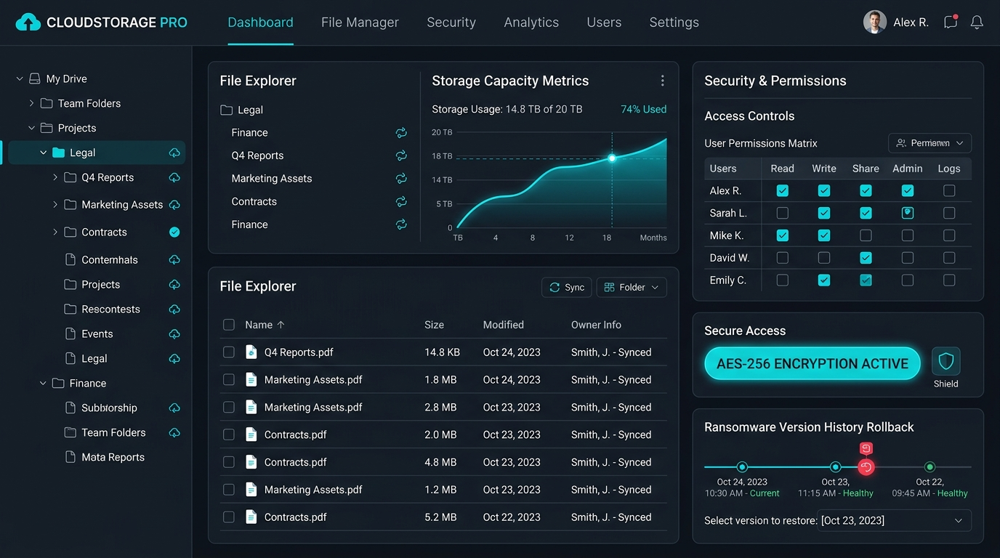

Seu Servidor de Arquivos em Nuvem com Segurança Militar e Zero Custo de Hardware Físico
Substitua de vez o servidor local da sua empresa por uma nuvem corporativa de alta velocidade. Acesse seus arquivos no Windows ou Mac como uma unidade local de rede (Letra Z:), de qualquer lugar, com versionamento imutável anti-ransomware, criptografia AES-256 e conformidade com a LGPD.

Modernização de Infraestrutura
Por que manter um servidor local físico se tornou um risco caro?
Veja o comparativo direto entre manter equipamentos antigos na empresa e migrar para o Sysmax Cloud File Server.
Falhas mecânicas de HD e custos com servidor físico
Servidores locais exigem nobreaks, manutenção periódica, substituição cara de discos e ar-condicionado ligado 24h por dia.
Nuvem Sysmax com 99,9% de disponibilidade em Datacenter Tier III sem preocupação com peças, energia ou queima de hardware.
Acesso remoto lento e VPNs instáveis que caem a todo instante
Equipes em home office ou filiais enfrentam lentidão crônica e conexões VPN complexas que travam a abertura de pastas e planilhas.
Acesso nativo e ultrarrápido pelo Windows Explorer, macOS Finder, Web Portal ou celular com sincronização inteligente sob demanda.
Risco catastrófico de sequestro por Ransomware
Em um servidor local, se um computador for infectado na rede, todos os compartilhamentos são criptografados e a empresa perde tudo.
Escudo anti-ransomware com versionamento imutável de até 90 dias: reverta pastas inteiras para minutos antes do ataque com 1 clique.
Desordem de arquivos e vazamento sem conformidade com a LGPD
Falta de auditoria sobre quem apagou, copiou ou enviou dados sensíveis da empresa para fora, expondo a diretoria a multas da ANPD.
Matriz granular de permissões por departamento com logs detalhados de auditoria e criptografia AES-256 bits ponta a ponta.
Recursos Avançados
Tudo o que sua empresa precisa para gerenciar arquivos com total controle
Desenvolvido para atender exigências de escritórios, clínicas, financeiras e indústrias que não podem parar.
Mapeamento como Disco Local (Z:)
Aparece como uma pasta ou drive de rede convencional no Windows e Mac. Seus colaboradores não precisam reaprender nada.
Versionamento & Anti-Ransomware
Cada modificação ou salvamento gera um histórico de versões. Recupere documentos alterados ou sequestrados instantaneamente.
Segurança Militar AES-256
Criptografia em trânsito (SSL/TLS de 256 bits) e no repouso (AES-256). Seus dados ficam protegidos contra qualquer interceptação.
Controle de Permissões Granular
Defina com precisão quem tem acesso de leitura, escrita, compartilhamento ou exclusão em cada pasta ou projeto corporativo.
Compartilhamento Externo Seguro
Envie links públicos ou protegidos por senha e prazo de validade para clientes e parceiros, eliminando anexos pesados de e-mail.
Auditoria Completa & LGPD
Relatórios e registros em tempo real de todas as ações: criação, edição, download, deleção e compartilhamento de arquivos.
Calcule sua Capacidade e Economia Mensal
Ajuste o espaço em disco e a quantidade de colaboradores para visualizar a estimativa de custos e comparativo com servidor físico.
Valores transparentes sem taxa de cancelamento ou surpresas com tráfego de dados.
Escolha a modalidade ideal para o porte da sua empresa
Planos dimensionados para consultórios, escritórios de advocacia, contabilidade e indústrias.
Cloud Starter
Ideal para pequenas empresas com até 15 colaboradores que buscam segurança básica e acesso remoto fácil.
- Mapeamento Windows/Mac como disco Z:
- Retenção de versões de 30 dias
- Criptografia SSL + AES-256
- Links públicos com expiração
- -Auditoria avançada de logs
Cloud Business Pro
Para empresas em crescimento que exigem isolamento por departamentos, auditoria LGPD e versionamento estendido.
- Mapeamento Windows/Mac sem consumir SSD
- Retenção de versões de 60 dias imutável
- Rollback anti-ransomware com 1 clique
- Permissões por grupo e departamento
- Relatórios de auditoria e conformidade LGPD
Cloud Enterprise
Para alta demanda de arquivos (projetos pesados, engenharia, agências) com suporte prioritário e SLA de 1 hora.
- Armazenamento dedicado de alta performance
- Retenção de versões de 90 dias com snapshot
- Integração com Active Directory / Azure AD
- Gerente de contas técnico dedicado
- SLA de 1h para incidentes críticos
Migração 100% segura sem parar a sua operação
Nossa equipe executa a transferência em segundo plano para que sua empresa não perca um único dia de faturamento.
Diagnóstico & Mapeamento
Nossa equipe técnica analisa a estrutura de pastas do seu servidor atual, volumes de dados e níveis de permissão existentes.
Sincronização em Segundo Plano
Migramos todo o repositório de arquivos de forma contínua e segura, sem interromper um minuto sequer o trabalho da sua equipe.
Validação de Permissões & Testes
Configuramos as permissões departamentais, instalamos o agente nos dispositivos e validamos a integridade de 100% dos arquivos.
Virada de Chave & Desativação do Local
Sua equipe passa a usar a nuvem no mesmo dia com treinamento rápido. O antigo servidor físico é desativado gerando economia imediata.
Perguntas Frequentes sobre Cloud File Server
Tudo o que você precisa saber antes de migrar os arquivos da sua empresa para a nuvem Sysmax.
Precisa também de PABX em Nuvem ou Suporte Técnico Especializado?
Unifique suas faturas de telecomunicação, suporte de TI e nuvem em um único parceiro de tecnologia.
Migre seus Arquivos para a Nuvem Sysmax
Preencha os dados abaixo para receber um diagnóstico gratuito e um plano de migração sob medida para a sua infraestrutura.
Pronto para modernizar a comunicação da sua empresa?
Preencha o formulário e receba um diagnóstico sem compromisso em até 30 minutos ou fale diretamente com nossos consultores técnicos.
Seus dados comerciais nunca serão compartilhados com terceiros nem usados para spam.